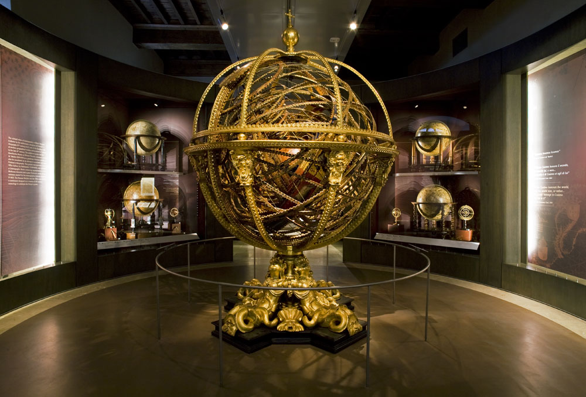
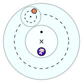
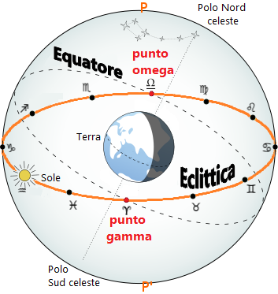
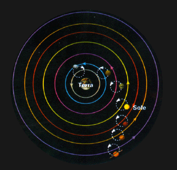
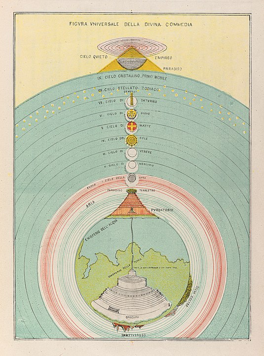

28. E lo cielo di Saturno hae due proprietadi per le quali si può
comparare a l’Astrologia: l’una sì è la tardezza del suo movimento
per li dodici segni, chè ventinove anni e più, secondo le scritture
de li astrologi, vuole di tempo lo suo cerchio; l’altra sì è che
sopra tutti li altri pianeti esso è alto.
29. E queste due proprietadi sono ne l’Astrologia: chè nel suo
cerchio compiere, cioè ne lo apprendimento di quella, volge
grandissimo spazio di tempo, sì per le sue [dimostrazioni], che sono
più che d’alcuna de le sopra dette scienze, sì per la esperienza che
a ben giudicare in essa si conviene.
30. E ancora è altissima di tutte le altre, però che, sì come dice
Aristotile nel cominciamento de l’Anima, la scienza è alta di
nobilitade per la nobilitade del suo subietto e per la sua certezza;
e questa più che alcuna de le sopra dette è nobile e alta per nobile
e alto subietto, ch’è de lo movimento del cielo; e alta e nobile per
la sua certezza, la quale è sanza ogni difetto, sì come quella che
da perfettissimo e regolatissimo principio viene. E se difetto in
lei si crede per alcuno, non è da la sua parte, ma, sì come dice
Tolomeo, è per la negligenza nostra, e a quella si dee imputare.
Il Sistema Tolemaico
Aristotele e le sfere armillari

Il Sistema Tolemaico
Apollonio e gli epicicli

Il Sistema Tolemaico
Ipparco di Nicea: l'eclittica e la precessione degli equinozi

Il Sistema Tolemaico
Tolomeo

L'universo secondo Dante

Dante: preciso Astronomo o semplice poeta?
Descrizioni dettagliate
Grande conoscenza dell'astronomia del tempo
Incongruenze temporali
Errori "astronomici"
Il moto dei cieli: il Cielo Cristallino
Il mezzo, e tutto l’altro intorno move,
Quinci comincia, come da sua meta.
E questo Cielo non à altro dove,
Che la Mente Divina, in che s’accende
L’amor che ’l volge, e la virtù ch’ei piove,
Luce et amor d’un cerchio lui comprende,
Siccome questo li altri; e quel procinto
Colui, che ’l cinge, solamente intende.
Non è suo moto per altro distinto;
Ma li altri son mensurati da questo,
Siccome diece da mezzo e da quinto.
E come ’l tempo tegna in cotal testo
Le sue radici, e nelli altri le fronde,
Omai a te può esser manifesto.
Il moto dei cieli: il Cielo Cristallino
Et io rispondo ch’ io credo in un Dio
Solo et eterno, che tutto ’l Ciel move,
Non moto, con amore e con disio;
La precessione degli equinozi
pria che passin mill’anni? ch’è più corto
spazio a l’etterno, ch’un muover di ciglia
al cerchio che più tardi in cielo è torto.
Dante spiega l'eclittica
Leva dunque, lettore, a l’alte rote
meco la vista, dritto a quella parte
dove l’un moto e l’altro si percuote;
e lì comincia a vagheggiar ne l’arte
di quel maestro che dentro a sé l’ama,
tanto che mai da lei l’occhio non parte.
Vedi come da indi si dirama
l’oblico cerchio che i pianeti porta,
per sodisfare al mondo che li chiama.
Che se la strada lor non fosse torta,
molta virtù nel ciel sarebbe in vano,
e quasi ogne potenza qua giù morta;
La datazione del viaggio
Temp’era dal principio del mattino,
e ’l sol montava ’n sù con quelle stelle
ch’eran con lui quando l’amor divino
mosse di prima quelle cose belle;
sì ch’a bene sperar m’era cagione
di quella fiera a la gaetta pelle
l’ora del tempo e la dolce stagione
La datazione del viaggio
Ier, più oltre cinqu’ ore che quest’otta,
mille dugento con sessanta sei
anni compié che qui la via fu rotta.
La Via Lattea
Come distinta da minori e maggi
lumi biancheggia tra ’ poli del mondo
Galassia sì, che fa dubbiar ben saggi;
sì costellati facean nel profondo
Marte quei raggi il venerabil segno
che fan giunture di quadranti in tondo.
La Via Lattea
Maggior paura non credo che fosse
quando Fetonte abbandonò li freni,
per che ’l ciel, come pare ancor, si cosse;
L'aurora
La concubina di Titone antico
già s’imbiancava al balco d’orïente,
fuor de le braccia del suo dolce amico;
di gemme la sua fronte era lucente,
poste in figura del freddo animale
che con la coda percuote la gente;